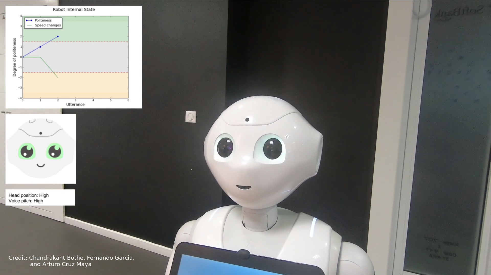
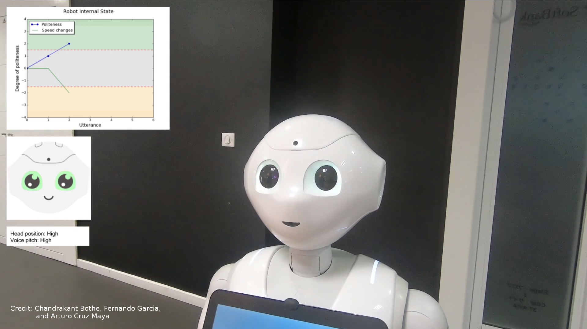
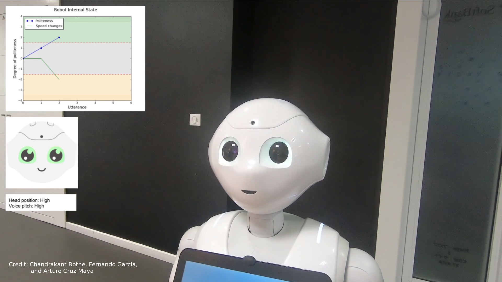

SECURE Secondment Project by Chandrakant Bothe
The secondment is accomplished with extensive experiment during July-August '18 in collaboration with the industrial partner SoftBank Robotics in Paris, France with their semi-humanoid robot Pepper.
